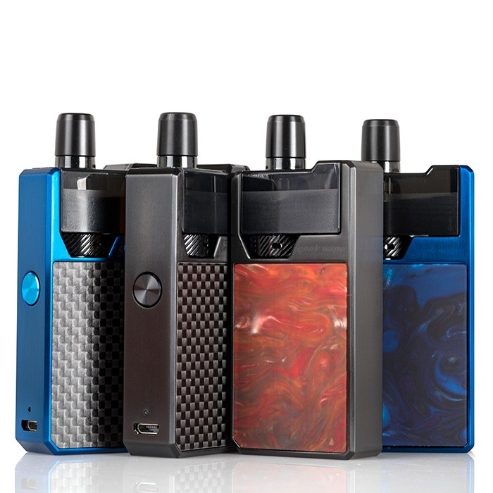
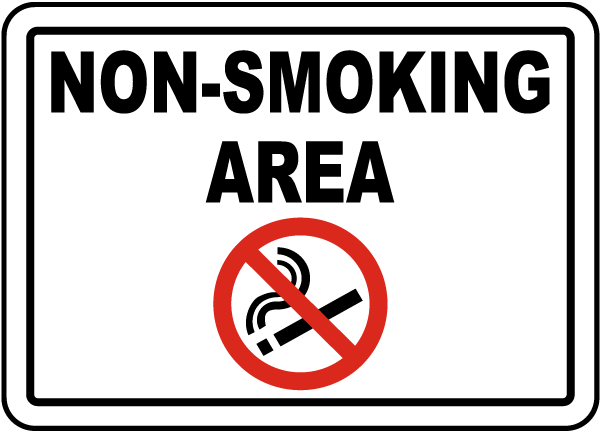

Pertama-tama saya sangat-sangat-sangat-sangat-sangat-sangat menyarankan kamu untuk membaca tentang salt nicotine terlebih dahulu. Saya sudah membahas cukup panjang mengenai perbedaannya, cara pakai sampai dengan dampaknya ke tubuh.Di akhir artikel ini kamu akan mempunyai keputusan atas apakah kamu akan membeli pod system? Jika iya, apa pod system terbaik untuk kamu?Jadi mari kita mulai!Tunggu sebentar… artikel ini cukup panjang (tapi worth to read, promised!), namun jika kamu tidak mempunyai banyak waktu maka ini rangkumannya:Pod system terbaik untuk pemula: Minifit Just Fog
Smoant S8 atau Karat Suroin Air Rincoe CetoPOD SYSTEM ITU
Bagi saya pribadi pod system adalah sebuah pelengkap.Dulu saya menghabiskan banyak waktu untuk mencari RDA terbaik, mengganti kapas, building coil, setting dan lain-lain. Jangan salah sangka, saya menikmatinya. Namun ada kalanya kamu tidak memiliki waktu dan kamu tahu bahwa vape kamu sedang tidak optimal (belum ganti kapas atau coil). Di sinilah pod system menggantikan peran dari vape.Selain itu ada waktu-waktu tertentu di mana pod system lebih masuk akal. Saya tidak suka mengganggu orang dengan asap tebal ketika berkumpul bersama teman atau rekan bisnis, di sini saya bisa menggunakan pod system.Dulu saya juga suka membawa mod saya jika mendatangi pernikahan, saya taruh di kantong jas dan cukup berat. Sekarang saya membawa pod saya yang kecil.Jadi jelas, kepraktisan adalah faktor utamanya. Namun mari saya goda kamu dengan dua faktor tambahan.Keadaan liquid nasional sedang dalam fase menunggu, terutama setelah cukai mulai berlaku. Saya melihat beberapa liquid sudah tidak keluar lagi, mungkin karena masalah keuangan atau juga sedang menunggu cukai. Selain itu liquid USA pun sudah cukup jarang ditemui walaupun mulai masuk kembali.Namun anehnya salt nicotine, nampaknya masih dapat bergerak lebih leluasa. Saya sering melihat banyak liquid salt nicotine USA yang unik dengan komposisi rasa yang tidak umum. Padahal versi freebase (liquid biasa) tidak pernah memasuki Indonesia sama sekali. Jadi sering sekali cara untuk menikmati liquid USA yang terkenal di luar sana adalah dengan membeli versi salt-nya.Yang terakhir adalah tendangan nikotin yang cepat dan terjamin. Saya sering mendengar keluhan dari teman ataupun dari kamu, bahwa tidak semua liquid mempunyai efek yang sama, ada 3mg yang terasa solid, ada yang sepertinya berbohong tidak sampai 3mg atau 6mg yang terasa seperti 3mg.Masalah ini sangat jarang saya temui di salt nic. Apa lagi jika kamu mencari tendangan nicotine, salt nic akan menghantarkan jotosan tepat di muka dari hisapan pertama
 Ini Salah 1 PODKalau Saya Bukan Perokok atau Vaper?
Jika kamu bukan perokok dan sedang galau memilih antara vape atau pod, maka saran saya adalah jangan.Saya serius, nikotin adalah bahan adiktif, vape 1-3x mungkin masih bisa berhenti. Tapi setelah 1 minggu kamu cenderung tidak akan berhenti.Ini adalah komitmen besar, karena kamu mungkin akan menjalaninya seterusnya. Riset jangka panjang masih berlanjut, belum ada bukti 100% yang konklusif bahwa vape atau pod system sangat aman.Riset-riset yang sudah ada sekarang memang berkata demikian dan saya setuju, tapi itu baru riset jangka pendek (3-5 tahun).Tapi jika tekad kamu sudah bulat maka coba pod terlebih dahulu, ini alasannya: Investasi awalnya lebih murah, sekitar Rp300.000, ini pun sudah termasuk liquid yang cukup untuk 3-4 minggu. Sangat praktis dan mudah digunakan. Throat hit tipis pas untuk pemula (versi 25-30mg). Ketika kamu sudah cocok, kamu akan punya dua pilihan: tetap di pod atau beralih ke vape.Tendangan nikotin dari vape biasa bisa dikatakan lebih lemah, kamu akan membutuhkan beberapa kali inhale dan sedikit waktu sebelum nicotine diserap tubuh. Tapi kamu akan mendapatkan rasa yang luar biasa,Jika kamu menggunakan liquid yang sama persis, saya bisa bilang rasa di pod system itu sekitar 50-70% sedangkan di vape biasa kamu akan mendapatkan 80-100%.
Bagaimana Kebiasaan Baru Dengan Menggunakan Pod System?
Yang pertama saya rasakan adalah intensitas akan berkurang jauh. Jika sedang kerja saya biasanya akan vape dan melakukan re-drip 2-3x (total exhale mungkin sekitar 15-25x dalam 1 sesi). Dengan pod system saya biasanya hanya menarik 3-5x dan saya sudah mendapatkan nicotine (dengan bonus rasa) yang saya butuhkan.Tidak ada lagi proses wicking, building coil, membersihkan RDA dan lain-lain. Beli catridge, isi liquid dan sedot sampai rasa mulai tidak enak (1-2 minggu). Bilas dan ulangi.Namun pengguna pod system akan cenderung lebih sering melakukan charging karena kebanyakan pod hanya memiliki kapasitas baterai 300mAh. Jika kamu pengguna akut, maka dalam sehari mungkin kamu melakukan charging 2x. untungnya proses charging juga terhitung singkat sekitar satu jam saja.